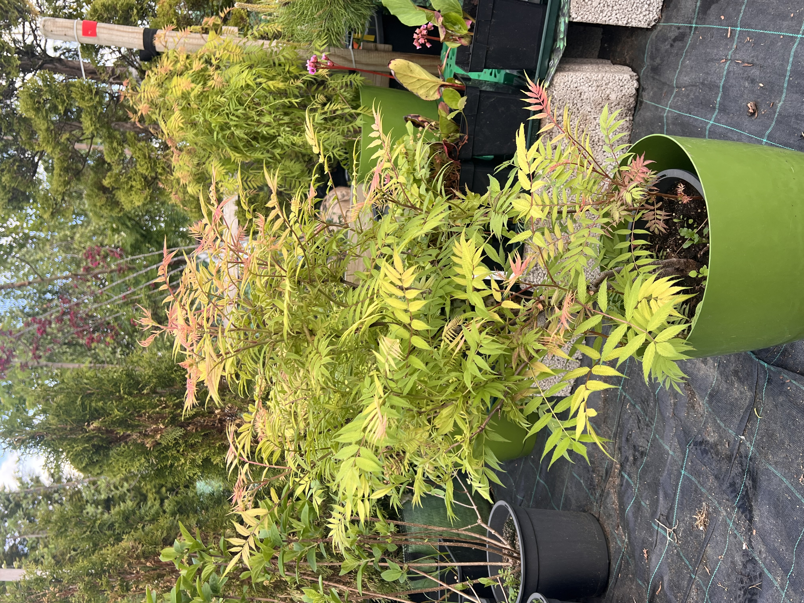
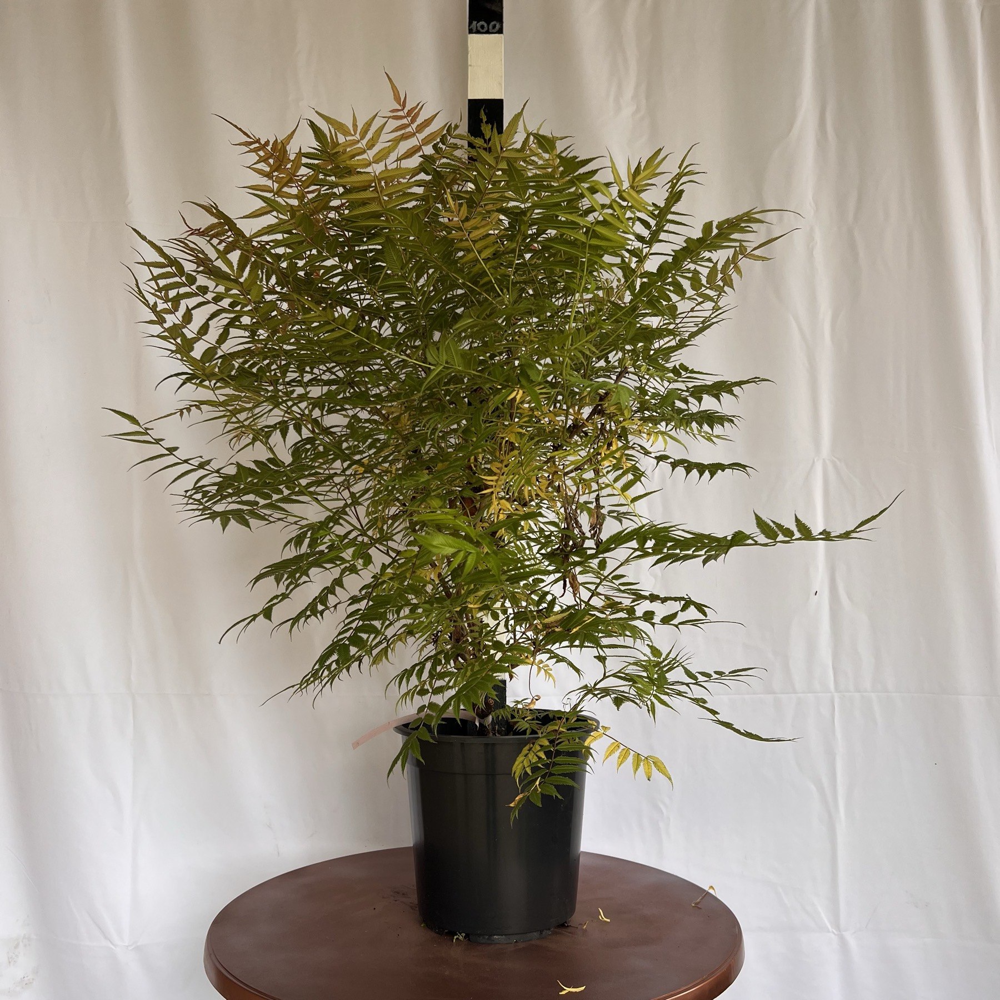
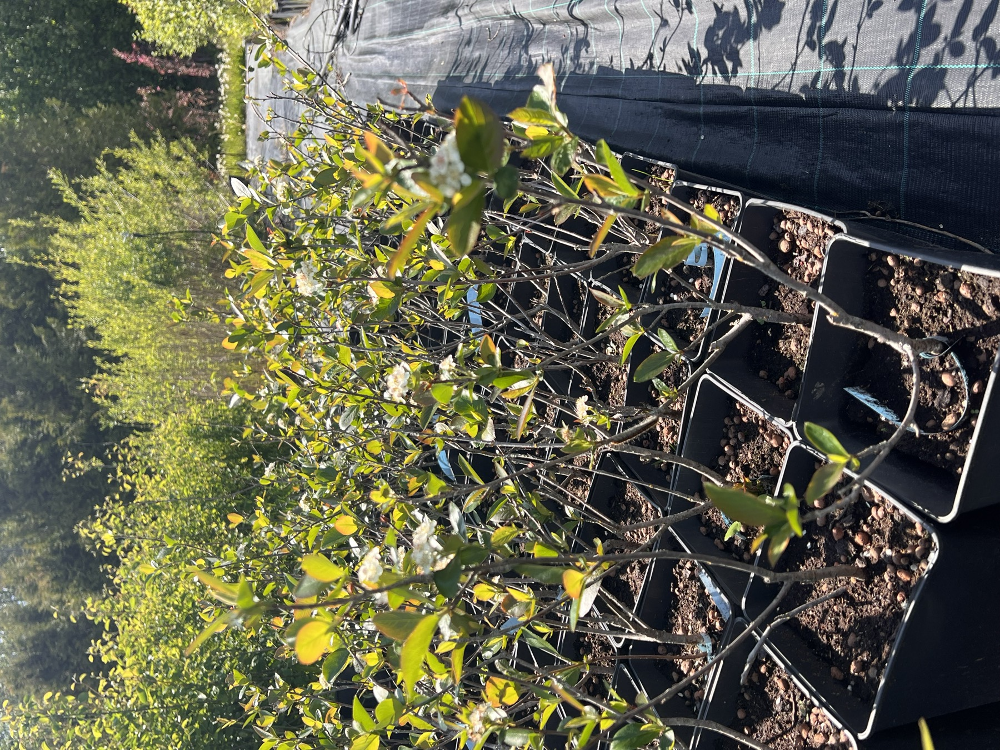
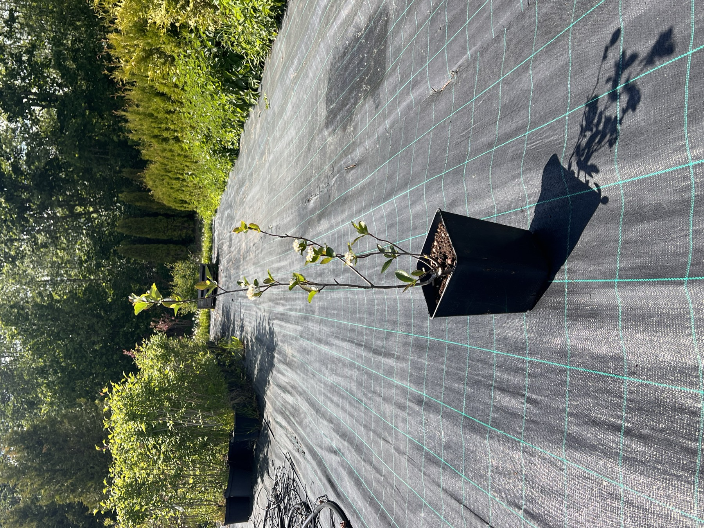

Näidistaim A — nime täpsustus puudub
Selle taime sort vajab täpsustamist. Üldiselt hea elujõuga, kuid ebaühtlase kujuga ja vajab kujunduslõikust. Sobib ostjale, kes soovib soodsamat taime ja on valmis seda kodus turgutama.
Hinnasoovitus: 9.00 € (demo)